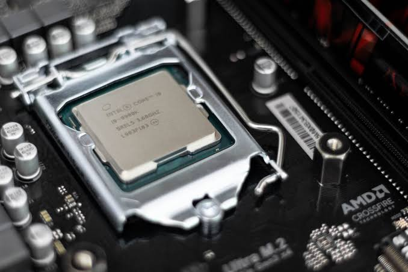

O crescimento da Inteligência Artificial
A Inteligência Artificial está sendo utilizada em diversas áreas, como educação indústria, saúde e desenvolvimento de software.
Portal de notícias e conhecimento sobre tecnologia
A Inteligência Artificial está sendo utilizada em diversas áreas, como educação indústria, saúde e desenvolvimento de software.
O desenvolvimento de sistemas continua sendo uma área importante para empresas que precisam criar soluções digitais.

Novos processadores, memórias e dispositivos estão tornando os computadores cada vez mais rápidos e eficientes.
Confira um vídeo relacionado ao desenvolvimento de sistemas:
Consulte alguns sites para aprender mais sobre tecnologia: